1. 모아노트는 어떤 앱인가요
모아노트는 손글씨 노트 앱이에요. 빈 노트에 바로 쓰는 것은 물론, HWP(한글) · PDF · 사진 · 삼성 노트 파일을 가져와서 그 위에 S펜이나 손가락으로 쓸 수 있어요.
- 광고가 없어요.
- 인터넷 권한이 없어요. 노트는 이 휴대폰 안에만 저장되고 어디로도 보내지 않아요.
- HWP 문서는 앱 안에서 원래 글자도 고칠 수 있어요 (7장).
- 다 쓴 노트는 PDF 로 만들어 카카오톡 · 메일 · 삼성 노트 등으로 보낼 수 있어요.
2. 첫 화면 (노트 목록)
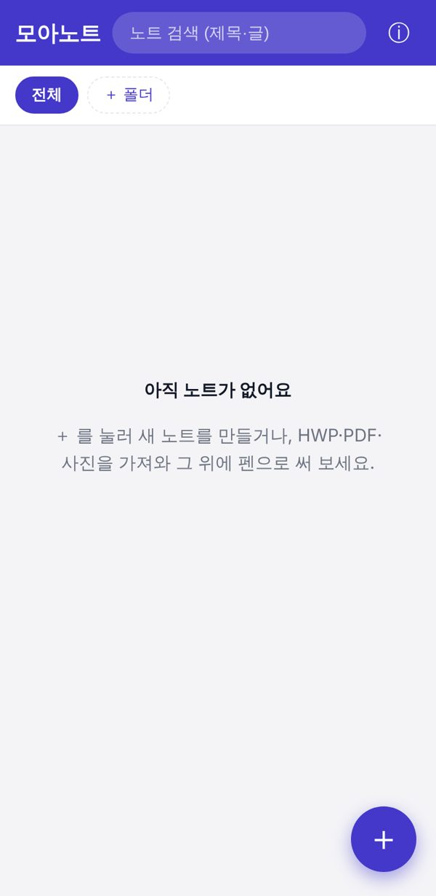
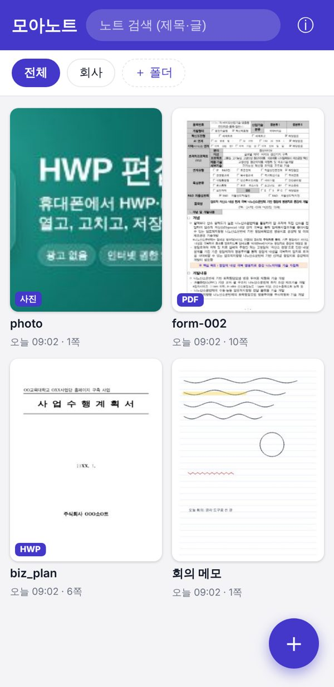
| 위치 | 하는 일 |
|---|---|
| 맨 위 검색 칸 | 노트 제목과 노트 안 글자(글자 도구로 쓴 글)로 찾아요. |
| 오른쪽 위 ⓘ | 앱 정보, 오픈소스 라이선스. |
| 폴더 줄 (전체 · 폴더 · ＋ 폴더) | 폴더를 눌러 그 폴더의 노트만 봐요. 9장 참고. |
| 노트 카드 | 누르면 열려요. 길게 누르면 노트 메뉴(보내기 · 이름 바꾸기 · 폴더 옮기기 · 지우기)가 나와요. |
| 카드 왼쪽 아래 표시 | 가져온 문서 종류: HWP PDF 사진 S노트. 표시가 없으면 직접 만든 노트예요. |
| 오른쪽 아래 ＋ | 새 노트 만들기 / 문서 가져오기. |
3. 새 노트 만들기
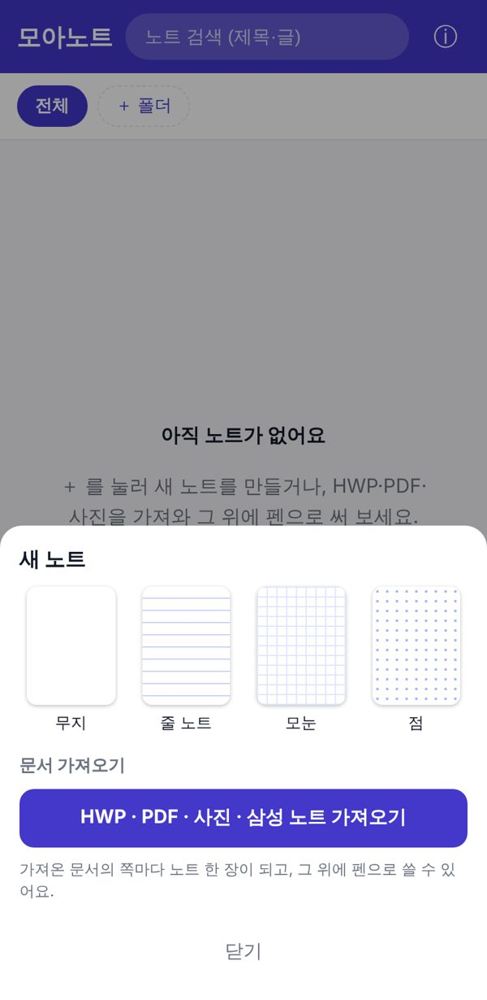
- 첫 화면 오른쪽 아래 ＋ 를 눌러요.
- 종이 모양을 골라요: 무지(빈 종이) · 줄 노트 · 모눈 · 점.
- 바로 노트가 열리고 펜으로 쓸 수 있어요. 제목은 "줄 노트 오늘 09:01" 처럼 자동으로 붙어요.
4. 문서 가져오기 (HWP · PDF · 사진 · 삼성 노트)
- ＋ → "HWP · PDF · 사진 · 삼성 노트 가져오기" 를 눌러요.
- 휴대폰 파일 고르는 화면이 열려요. 파일을 고르면 돼요. 여러 개를 한 번에 골라도 돼요 (파일마다 노트가 하나씩 생겨요).
- 가져오는 동안 "가져오는 중… 3 / 6" 처럼 진행이 보여요. 끝나면 노트가 열려요.
| 파일 | 어떻게 들어오나요 |
|---|---|
| HWP · HWPX | 쪽마다 노트 한 장. 쪽 그림 위에 펜으로 써요. 원본도 함께 보관해서 나중에 원래 글자를 고칠 수 있어요 (7장). |
| 쪽마다 노트 한 장. 쪽 그림 위에 펜으로 써요. | |
| 사진 (JPG · PNG 등) | 사진 한 장이 노트 한 장. |
| 삼성 노트 (.sdocx) | 삼성 노트에서 쓴 손글씨 획(색 · 굵기 · 필압)과 입력한 글자가 들어와요. 손글씨는 모아노트 필기가 되어 지우개로 지우거나 이어 쓸 수 있어요. |
⚠️ 삼성 노트의 사진 · 녹음은 아직 옮기지 못해요.
5. 노트에 쓰기 — 도구 줄
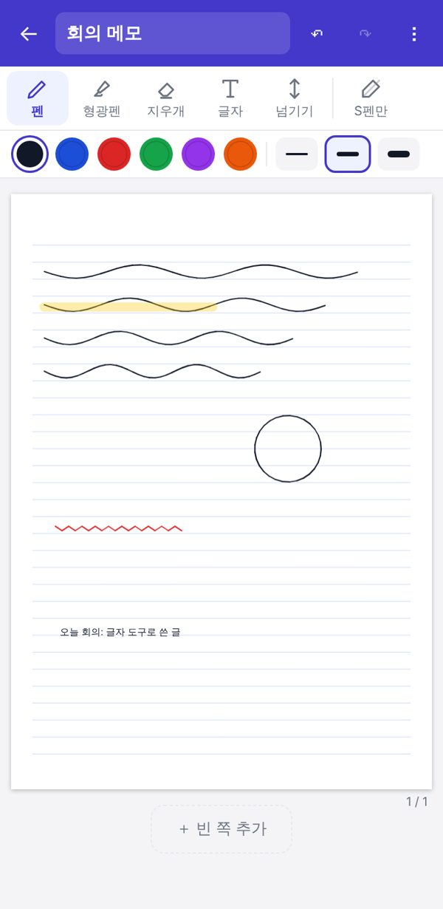
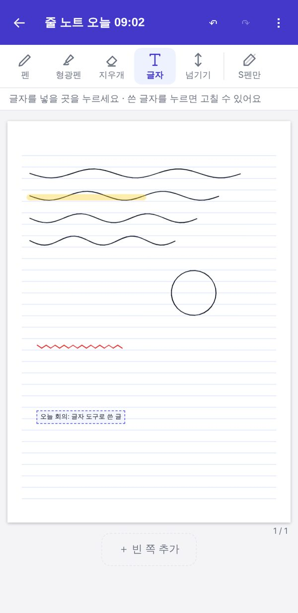
맨 위 줄
| 버튼 | 하는 일 |
|---|---|
| ← | 목록으로 돌아가요 (자동 저장돼요). |
| 제목 | 눌러서 노트 이름을 고쳐요. |
| ↶ ↷ | 되돌리기 / 다시 하기. 획 · 지우기 · 글자 · 쪽 추가/지우기를 되돌릴 수 있어요. |
| ⋮ | 노트 메뉴 (8장). |
도구
| 도구 | 쓰는 법 |
|---|---|
| 펜 | 글씨 · 그림. 아래 줄에서 색 6가지와 굵기 3가지를 골라요. S펜은 누르는 힘(필압)에 따라 굵기가 달라져요. |
| 형광펜 | 반투명 색으로 칠해요. 노랑 · 초록 · 분홍 · 파랑, 굵기 3가지. 겹쳐 칠해도 진해지지 않아요. |
| 지우개 | 문지른 곳에 닿은 획 전체를 지워요. 굵기 3가지 (클수록 넓게 지워요). 쪽 그림(가져온 문서)은 지워지지 않아요. |
| 글자 | 글자를 넣을 곳을 누르면 글자 상자가 생기고 키보드가 올라와요. 쓴 글자 상자를 다시 누르면 고칠 수 있어요. 글자를 모두 지우면 상자도 없어져요. 글자 색은 그때 고른 펜 색이에요. |
| 넘기기 | 손가락으로 써지지 않고 화면만 넘어가요. 문서를 읽기만 할 때 편해요. |
| HWP 고치기 | HWP 노트에만 보여요. 원래 문서 글자를 고쳐요 (7장). |
| S펜만 | 켜면 S펜으로만 써지고 손가락은 화면을 넘겨요 (6장). |
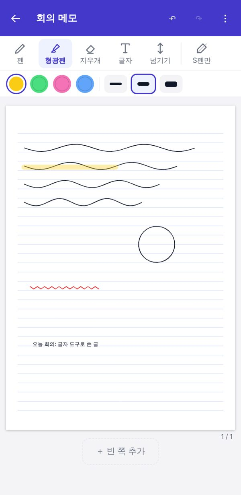
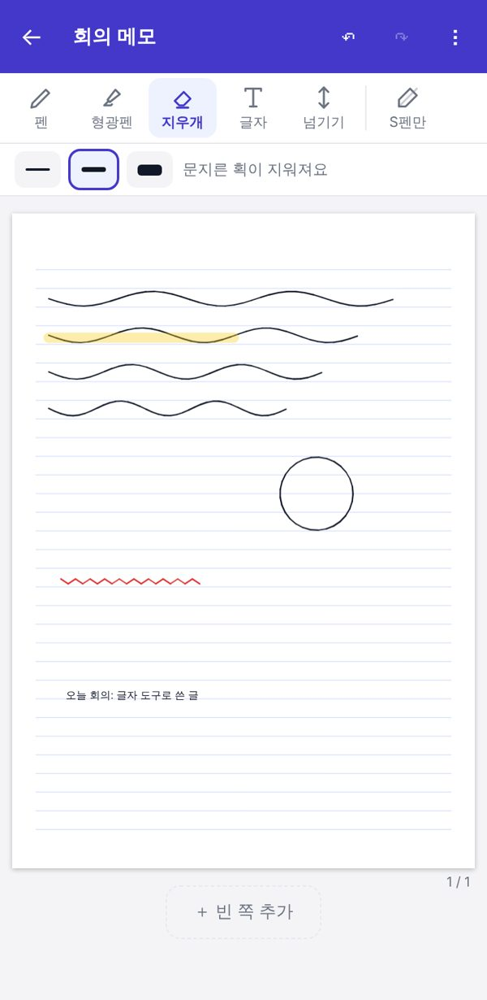
6. S펜만 모드와 화면 넘기기 · 확대
S펜만 모드
도구 줄 오른쪽 S펜만을 켜면:
- S펜 → 글씨만 써지고 화면은 움직이지 않아요.
- 손가락 한 개 → 화면을 위아래로 넘겨요. 빠르게 밀고 떼면 미끄러지듯 넘어가요.
- 손바닥 → 펜이 화면에 닿아 있는 동안 손바닥이 닿아도 그려지거나 넘어가지 않아요.
한 번 켜 두면 다음에 앱을 열어도 그대로예요. S펜으로 처음 쓰면 "S펜만을 켜 보세요" 안내가 한 번 나와요.
S펜만이 꺼져 있을 때
- 손가락 한 개로도 써져요. 화면 넘기기는 두 손가락으로 해요.
확대 · 축소
- 두 손가락을 벌리면 확대, 오므리면 축소. 손가락 사이 부분이 그 자리에 머물러요.
- 두 손가락을 대고 함께 움직이면 화면이 따라 움직여요.
- 손을 떼면 그 배율에 맞게 선명하게 다시 그려요.
7. HWP 원본 글자 고치기
가져온 HWP 는 쪽 그림 위에 펜으로 쓰는 것 말고도, 원래 문서의 글자를 직접 고칠 수 있어요. 주민등록번호 칸 같은 네모 칸도 한 칸씩 커서를 놓고 지우고 쓸 수 있어요.
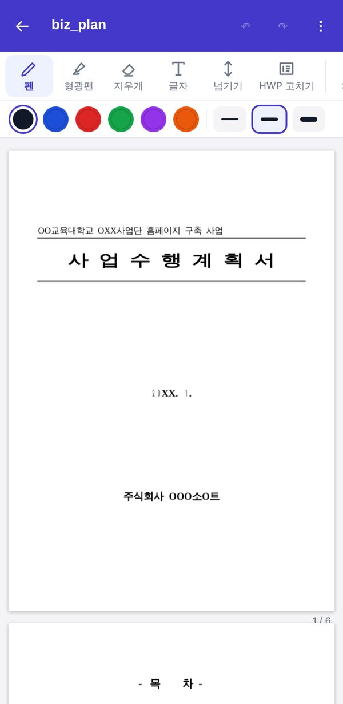
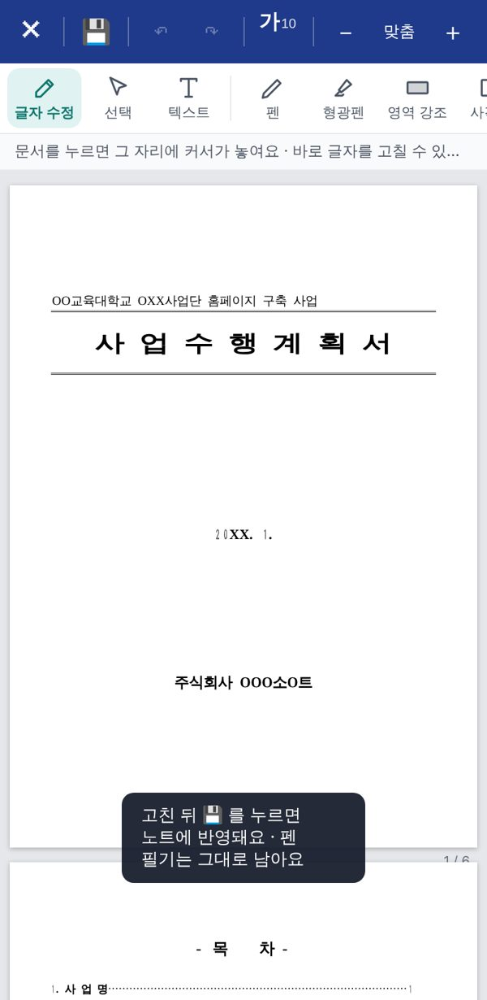
- HWP 노트를 열고 도구 줄의 HWP 고치기 (또는 ⋮ → 원본 글자 고치기)를 눌러요.
- HWP 편집 화면이 열려요. 문서를 누르면 그 자리에 커서가 놓이고 바로 고칠 수 있어요.
글자 크기(가), 펜 · 형광펜 · 사각형 · 이미지 · 서명 · 체크 도구도 쓸 수 있어요. - 다 고쳤으면 위쪽 💾 를 눌러요 → "노트에 반영했어요".
노트의 쪽 그림이 고친 내용으로 바뀌고, 그 위에 펜으로 써 둔 필기는 그대로 남아요. - ✕ 또는 휴대폰 뒤로 버튼으로 노트로 돌아와요. 반영하지 않은 내용이 있으면 먼저 물어봐요.
고친 HWP 파일 받기: ⋮ → HWP 로 저장 (고친 원본) → 저장할 곳과 이름을 정해요. 한글 · HWP 편집기 등 다른 앱에서 열 수 있는 진짜 HWP 파일이에요.
⚠️ 고쳐서 쪽 수가 바뀌면 필기는 같은 쪽 번호에 남아요 (예: 2쪽의 필기는 계속 2쪽에). 문서가 짧아져도 필기가 있는 뒤쪽은 지우지 않고 남겨요.
8. 노트 메뉴
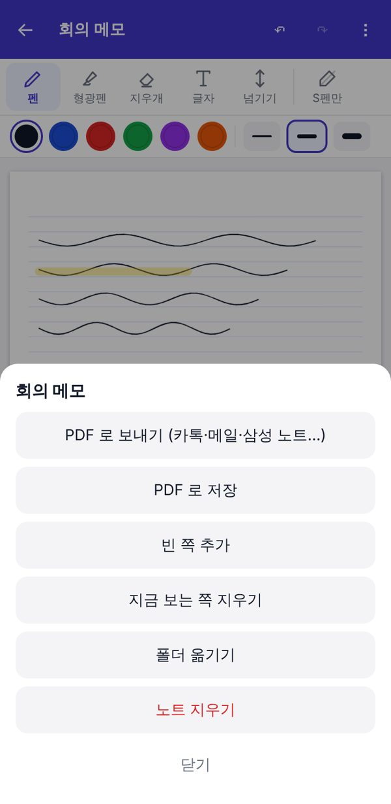
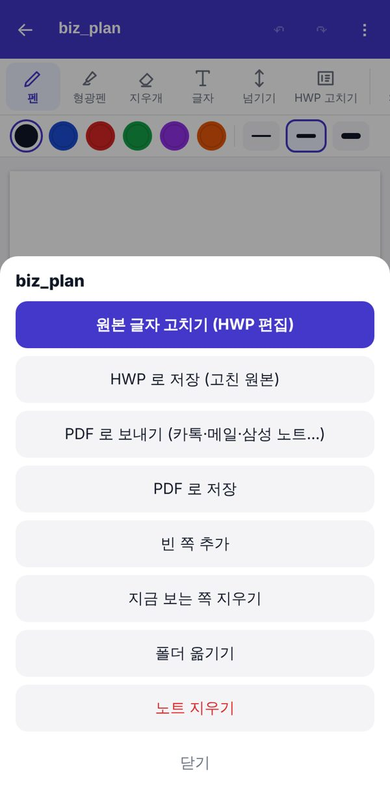
노트 화면의 ⋮, 또는 목록에서 노트 카드를 길게 누르면 나와요.
| 메뉴 | 하는 일 |
|---|---|
| 원본 글자 고치기 (HWP 편집) | HWP 노트만. 7장. |
| HWP 로 저장 (고친 원본) | HWP 노트만. 고친 HWP 파일을 저장해요. |
| PDF 로 보내기 | 필기까지 합친 PDF 를 만들어 카카오톡 · 메일 · 삼성 노트 등으로 바로 보내요. |
| PDF 로 저장 | PDF 파일을 휴대폰에 저장해요 (저장할 폴더 · 이름을 골라요). |
| 빈 쪽 추가 | 맨 뒤에 빈 쪽을 하나 더해요. |
| 지금 보는 쪽 지우기 | 화면 가운데 보이는 쪽을 지워요. ↶ 로 살릴 수 있어요. 마지막 한 쪽은 못 지워요. |
| 폴더 옮기기 | 노트를 다른 폴더로 옮겨요. |
| 이름 바꾸기 | 목록에서 길게 눌렀을 때 나와요. |
| 노트 지우기 | 노트를 완전히 지워요. 되돌릴 수 없어요. |
9. 폴더와 검색
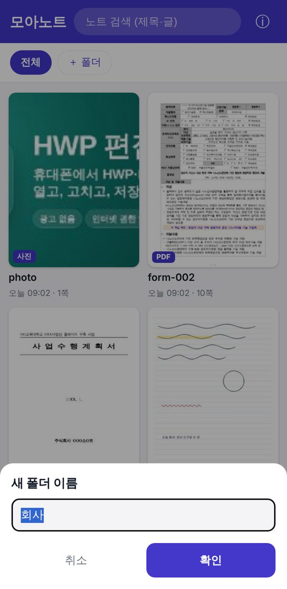
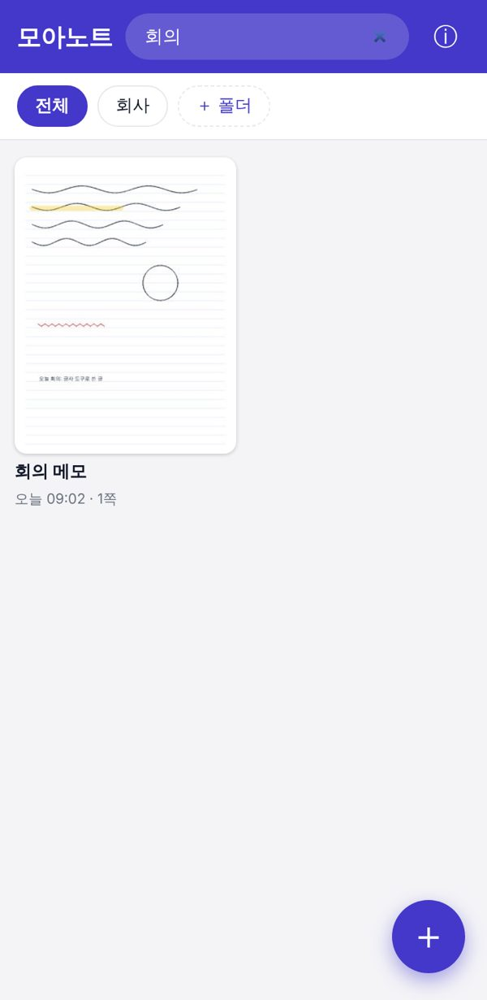
- 폴더 만들기: 폴더 줄의 ＋ 폴더 → 이름 → 확인. 폴더를 고른 상태에서 만든 새 노트는 그 폴더에 들어가요.
- 노트 옮기기: 노트 메뉴 → 폴더 옮기기.
- 폴더 이름 바꾸기 · 지우기: 폴더를 길게 누르기 → 이름을 고치면 바뀌고, 이름을 비우고 확인하면 폴더가 지워져요. 안에 있던 노트는 지워지지 않고 "전체"에 남아요.
- 검색: 맨 위 검색 칸에 쓰면 제목과 글자 도구로 쓴 글에서 찾아요. (손글씨 자체는 검색되지 않아요.)
10. 저장과 백업
- 저장 버튼이 없어요. 쓰는 대로 자동 저장돼요. 앱을 닫거나 다른 앱으로 가도 저장돼요.
- 노트는 앱 안 저장 공간에 있어요. 앱을 지우거나 "데이터 삭제"를 하면 노트도 지워져요.
- 중요한 노트는 PDF 로 저장하거나, HWP 노트는 HWP 로 저장해서 따로 보관해 두세요.
- 앱을 새 버전으로 업데이트할 때는 노트가 그대로 남아요.
11. 자주 묻는 질문
S펜으로 쓰는데 화면이 같이 움직여요
최신 버전으로 업데이트해 주세요. S펜만 모드에서 펜으로 쓸 때 화면이 움직이지 않도록 고쳤어요.
손바닥이 닿으면 선이 그어져요
도구 줄의 S펜만을 켜 주세요.
가져온 문서 글자가 흐려요
두 손가락으로 확대한 뒤 손을 떼면 그 배율로 다시 선명하게 그려요.
HWP 메뉴에 "원본 글자 고치기"가 안 보여요
예전에 가져온 노트라 원본이 없는 경우예요. 도구 줄의 HWP 고치기를 눌러 원본 파일을 연결해 주세요 (7장).
삼성 노트 파일(.sdocx)은 어디서 찾나요?
삼성 노트에서 노트를 열고 공유 → 삼성 노트 파일로 저장하거나 보내면 .sdocx 파일이 생겨요. 모아노트에서 ＋ → 가져오기로 그 파일을 골라요.
지운 노트를 살릴 수 있나요?
노트 지우기는 되돌릴 수 없어요. 쪽 지우기와 필기 지우기는 노트를 닫기 전까지 ↶ 로 되돌릴 수 있어요.